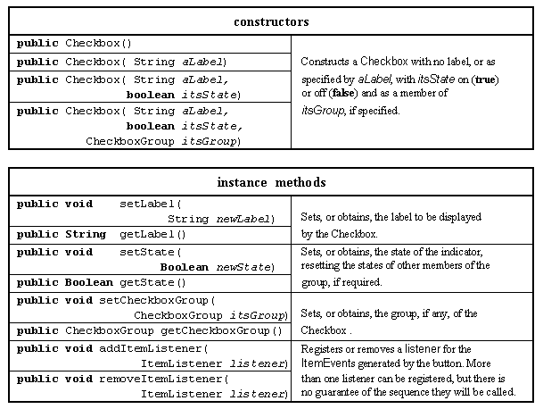
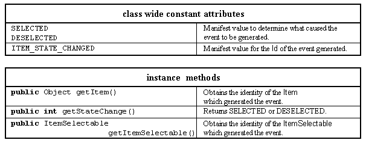
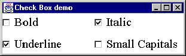
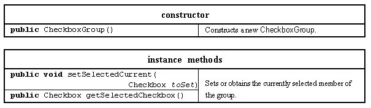
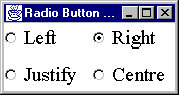

The Checkbox class provides a text label and an associated on/ off state indicator. It is used to implement check buttons and, in conjunction with the CheckboxGroup class, radio buttons. The major resources of this class are presented in Table 2.11.

Table 2.11 Major resources of the Checkbox class.
A Checkbox instance has three data attributes, the label which it will display, the CheckboxGroup to which it might belong and the state (on or off) of its indicator. If a Checkbox instance is not a member of a CheckboxGroup it will behave as a check button and its state can be set or unset independently of all other Checkbox buttons. If a Checkbox instance is a member of a CheckboxGroup it will behave as a radio button, where only one member of the group can be checked at any one instant and checking one of the buttons in the group will automatically unset all other buttons.
The first two constructors are comparable to the first two constructors of the Label class given above. The third constructor specifies its initial state, the last the initial state and the CheckboxGroup to which it belongs. The first six methods allow each of the three data attributes to be queried or set. The last two register and remove the Checkboxes' listener object.
Whenever the state of the Checkbox is changed it will generate a ItemEvent instance which is dispatched to its registered listeners. The ItemEvent class is used by a number of different AWT Components and its major resources are listed in Table 2.12. For an ItemEvent generated by a Checkbox instance, the getItemSelectable() method returns the identity of the instance which generated it and the getItem() method will return its label.

Table 2.12 Major resources of the ItemEvent class.
The following header and init() method, from a class called CheckExample which extends Applet, creates four Checkbox components configured as check buttons, which might be a part of an interface which selects the formatting options for a font. The CheckExample class also implements the ItemListener interface, allowing it to be registered with each of the Checkboxes (this) as the destination of the ItemEvents generated when they are checked or unchecked.
0001 // Filename CheckExample.java.
0002 // Provides an example of the AWT Checkbox class,
0003 // configured as a check box buttons.
0004 // Written for the Java interface book Chapter 2 - see text.
0005 //
0006 // Fintan Culwin, v 0.2, August 1997.
0007
0008 import java.awt.*;
0009 import java.applet.*;
0010 import java.awt.event.*;
0011
0012
0013 public class CheckExample extends Applet
0014 implements ItemListener {
0015
0016 private Checkbox boldButton;
0017 private Checkbox italicButton;
0018 private Checkbox underlineButton;
0019 private Checkbox smallcapsButton;
0020
0021 public void init() {
0022 this.setLayout( new GridLayout( 2, 2, 5, 5));
0023
0024 boldButton = new Checkbox( "Bold");
0025 boldButton.addItemListener( this);
0026 this.add( boldButton);
0027
0028 italicButton = new Checkbox( "Italic");
0029 italicButton.addItemListener( this);
0030 this.add( italicButton);
0031
0032 underlineButton = new Checkbox( "Underline");
0033 underlineButton.addItemListener( this);
0034 this.add( underlineButton);
0035
0036 smallcapsButton = new Checkbox( "Small Capitals");
0037 smallcapsButton.addItemListener( this);
0038 this.add( smallcapsButton);
0039 } // End init.
The appearance of the interface produced by this code is shown in Figure 2.5 and shows that both the Italic and Underline Checkboxes have been selected by the user. A two by two GridLayout layout manager is installed into the Applet Panel in order to obtain the required visual appearance. From a consideration of the code and the image it can be seen that components are added in a left right/ top down manner.

Figure 2.5 Checkbox example configured as check buttons.
In order to implement the ActionListener interface the CheckExample class must declare an itemStateChanged() method, as follows.
0042 public void itemStateChanged( ItemEvent event) {
0043 System.out.print( "Item Selectable is ");
0044 if ( event.getItemSelectable() == boldButton) {
0045 System.out.println( "bold Button");
0046 } else if ( event.getItemSelectable() == italicButton) {
0047 System.out.println( "italic Button");
0048 } else if ( event.getItemSelectable() == underlineButton) {
0049 System.out.println( "underline Button");
0050 } else if ( event.getItemSelectable() == smallcapsButton) {
0051 System.out.println( "small caps Button");
0052 } // End if.
0053
0054 System.out.println( "Item is " + event.getItem());
0055
0056 System.out.print( "State Change is ... ");
0057 if ( event.getStateChange() == ItemEvent.SELECTED) {
0058 System.out.println( "Selected");
0059 } else {
0060 System.out.println( "Deselected");
0061 } // End if.
0062
0063 if ( event.getID() == ItemEvent.ITEM_STATE_CHANGED ) {
0064 System.out.println( "ID is ITEM_STATE_CHANGED.");
0065 } // End if.
0066 System.out.println( "\n");
0066 } // End itemStateChanged.
The CheckExample class also declares a main() method, which doers not differ significantly from the ClickCounterTranslation main() method from Chapter 1. When the application was launched and the Italic Checkbox selected and immediately deselected the output produced was as follows.
Item Selectable is italic Button Item is Italic State Change is Selected ID is ITEM_STATE_CHANGED. Item Selectable is italic Button Item is Italic State Change is Deselected ID is ITEM_STATE_CHANGED.
The first line of each output is produced by lines 0043 to 0052 and shows that the getItemSelectable() method returns the identity of the Checkbox used. The second line is produced by line 0054 and shows that the getItem() returns the Checkbox's label. The third line differs between the two outputs and shows the use of the getStateChange() method on line 0057. Finally the only ID value which will be returned from a Checkbox is ITEM_STATE_CHANGE, used on line 0063.
In order to configure Checkbox instances as radio buttons an instance of the CheckboxGroup class has to be created and specified as the group attribute of the set of buttons. The major resources of the CheckboxGroup class are given in Table 2.13.

Table 2.13 Major resources of the CheckboxGroup class.
The CheckboxGroup class encapsulates the identities of the Checkboxes which comprise its group and maintains knowledge of which one is currently selected. It has a single default constructor and an enquiry and a modifier method for the currently selected component. The following init() method, from a class called RadioExample, creates four Checkbox components configured as radio buttons which might be a part of an interface which selects the formatting options for a paragraph.
0013 public class RadioExample extends Applet
0014 implements ItemListener {
0015
0016 private Checkbox leftButton;
0017 private Checkbox rightButton;
0018 private Checkbox justifyButton;
0019 private Checkbox centerButton;
0020
0021 public void init() {
0022
0023 CheckboxGroup theGroup = new CheckboxGroup();
0024
0025 this.setLayout( new GridLayout( 2, 2, 5, 5));
0026
0027 leftButton = new Checkbox( "Left", false, theGroup);
0028 leftButton.addItemListener( this);
0029 this.add( leftButton);
0030
0031 rightButton = new Checkbox( "Right", false, theGroup);
0032 rightButton.addItemListener( this);
0033 this.add( rightButton);
0034
0035 justifyButton = new Checkbox( "Justify", true, theGroup);
0036 justifyButton.addItemListener( this);
0037 this.add( justifyButton);
0038
0039 centerButton = new Checkbox( "Centre", false, theGroup);
0040 centerButton.addItemListener( this);
0041 this.add( centerButton);
0042 } // End init.
As all four Checkbox buttons have the same CheckboxGroup specified in their constructor they will behave as a single group of radio buttons and as the Justify button has been constructed with its state specified true it will be initially shown as selected. The appearance of the interface produced by the code, using a two by two GridLayout and with the Right radio button selected is shown in Figure 2.6.

Figure 2.6 Checkbox example configured as radio buttons.
The examples in Figures 2.6 and 2.6 were realized in a Windows 95 environment and the use of a square marker for check box buttons and round markers for radio buttons is a property of the peer environment, not of Java.
Design Advice
A collection of mutually exclusive radio buttons should always be grouped closely together on an interface and made distinct from other groups of components.
The itemStateChanged() method included in the RadioExample class is exactly the same as that included in the CheckExample class above. When the Centre button was pressed the output produced was as follows, showing that only the selection of the Centre button and not the deselection of the previously selected button generates an ItemEvent.
Item Selectable is centre Button Item is Centre State Change is Selected ID is ITEM_STATE_CHANGED.